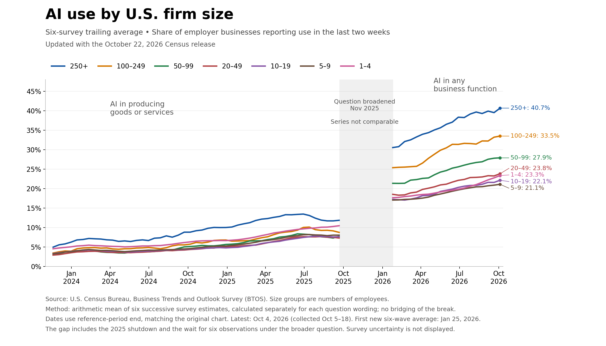
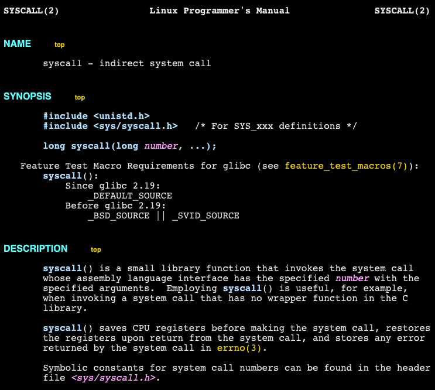

🔥 Top 3 (must read)
Launch HN: Momentic (YC W24) – Agents that catch bugs by using your app
Momentic sells AI agents that test your app by using it the way a real user would. The launch got 130 points and 85 comments on Hacker News, where people discuss how well this works next to scripted E2E tests. Why it matters: This is agent-driven E2E testing, so it competes directly with your Playwright and Maestro work. The HN thread is a good place to see what breaks in practice before you trial it.

llm 0.37
Simon Willison's LLM CLI tool and Python library get a big release with about two months of features and fixes. It adds
gpt-6.1-sol and gpt-6.1-terra, plus a new llm openai endpoint add command to set up any OpenAI-compatible model. Why it matters: It is a simple way to call many models from shell scripts and CI jobs, without writing SDK code for each provider.S
Ship It Conversations: The AI Hallucination That Looks Right
Devansh from Irys explains that the hardest legal-AI hallucination is a real case used in the wrong way. He also explains how his team splits their system into three tiers to find failures fast. He argues that teams should optimize for maintenance, not for generation. Why it matters: AI-generated code that "looks right" causes the same problem, so the maintenance-first view fits code review and AI adoption on your team.
R
🛠 Tools & releases
llm 0.37
: new models, plus
llm openai endpoint add to connect any OpenAI-compatible API.S
🤖 AI for developers
Momentic
: AI agents that find bugs by clicking through your app (HN discussion).
My Agent Gave the Right Answer. Then It Wrote Down That It Was Wrong.
: the author asked their own agent about a conversation that never happened, as a planted test. The agent answered correctly at the time. The problem showed up in what it wrote into its memory afterwards. Useful if you build agents that keep long-term memory.
Ship It: models that change under you
: covers three-tier error isolation and what to do when your provider updates the model behind your app.
R
👔 Engineering & teams
The U.S. Census Bureau and "Super Intelligence"
: Simon goes back to the 2025 chart that showed AI adoption "trending down" at large companies, based on Census Bureau data. Read it before you quote AI-adoption numbers to leadership.

🎯 For me
Momentic
Automation testing: is today's best match. Ask: can agent-based tests sit next to your Playwright/Maestro suites in CI? Or are they only a layer for exploring the app and finding bugs?
the Ship It episode
EM / AI adoption: argues for "optimize for maintenance over generation". This is a useful frame when your team discusses how much AI-written code to accept.
R
💡 App ideas & indie builds
Subvocal
: talk to your computer without making a sound. Problem: voice input does not work in open offices, libraries, or late at night. Inspiration: this was today's biggest Show HN (575 points, 311 comments). It shows strong demand for new kinds of speech input, which is close to speech-tech work.
N
Wikihack
: collects the Wikipedia articles mentioned on HN, in the style of "HackerTube". Problem: interesting links get lost inside long comment threads. Inspiration: take one community's content and pull out one type of link. This is a cheap, repeatable idea for a small app (HN).
W
HackerHack
: the same idea in the style of "HackerBooks", but for posts shared on HN. Inspiration: two similar apps on the front page on the same day shows this "curated feed from comments" idea is popular right now.
N
Warsaw in voxels
: an interactive 3D voxel map of Warsaw's city centre. Problem: normal maps are flat and not fun to explore. Inspiration: a playful view of real-world data can get a lot of attention (HN).

syscall.sh
: a website and API for looking up Linux system calls. Problem: syscall reference info is spread out and hard to search. Inspiration: a clean, focused reference site with an API can be a long-lived side project (HN).

🎓 Try this
Install llm 0.37 and use the new
llm openai endpoint add command to register an OpenAI-compatible endpoint, such as an internal gateway or a local model. Then try piping a git diff into llm for a quick first-pass review comment from your terminal (setup docs).